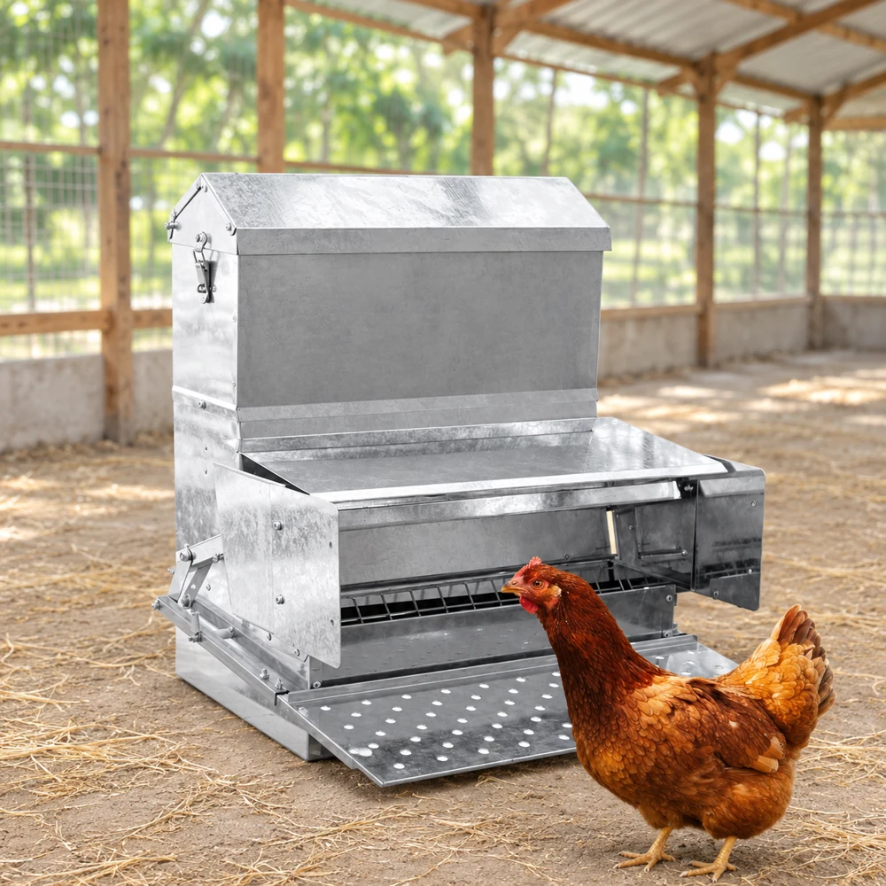

Comederos
Comedero de pedal RentACoop de 40 lb
ASIN B07ZJVQH1B
Comedero metálico con depósito nominal de 40 libras y acceso mediante pedal. El formato puede interesar a quien busca limitar la exposición del pienso entre comidas. Requiere una superficie estable y una adaptación supervisada: antes de depender de él, comprueba que cada gallina abre el mecanismo y come con normalidad.
Por qué lo preseleccionamos
Lo preseleccionamos para comparar un sistema de pedal con las tolvas de acceso abierto. Su capacidad solo compensa si puedes mantener el pienso seco y revisar el mecanismo a diario.
Lo que más gusta del diseño
- Depósito nominal de 40 lb, aproximadamente 18,1 kg.
- Cuerpo metálico y acceso frontal con pedal.
- Permite valorar el cierre del alimento entre comidas.
Antes de elegirlo
- Peso necesario para accionar el pedal según el manual de la variante.
- Espacio frontal libre y superficie firme para apoyar el equipo.
- Acceso de las aves más pequeñas o menos dominantes.
Consejos de uso
- Introduce el sistema siguiendo el entrenamiento del fabricante.
- Retira el pienso húmedo y comprueba bisagras y pedal durante la limpieza.
Selección editorial por características; no resume opiniones de compradores ni una prueba física.
Comprobar variante y disponibilidad en AmazonReferencia comercial utilizada
Pendiente antes de publicar
- Confirmar destino y variante actual en Amazon.com.
- Confirmar valoración superior a cuatro estrellas y disponibilidad actual.
- Revisión final y aprobación antes de incorporar al catálogo.